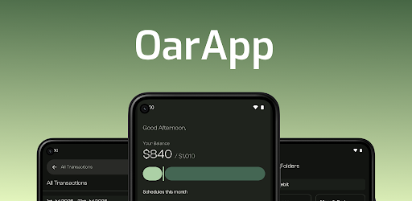
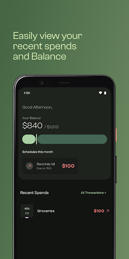
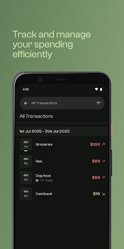
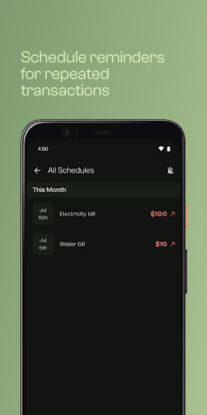
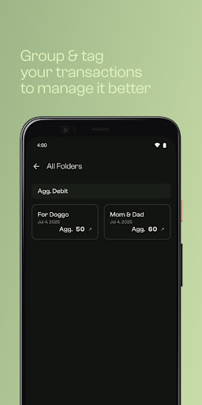
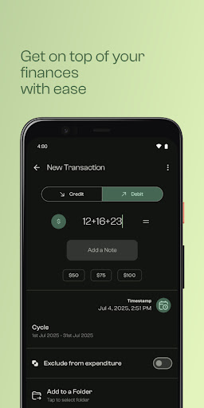

Android · Expense & Budget Tracker

Track and manage your expenses effectively. Oar keeps your financial data local to your device by default, with an optional encrypted backup to your own Google Drive.





Oar is a user-friendly Android application designed to empower individuals in managing their finances effectively. With Oar, users can effortlessly track and control their expenses, helping them maintain financial discipline and achieve their financial goals.
What data Oar collects, how it's stored, and your privacy rights.
How to delete your local data, account, and any Google Drive backup.